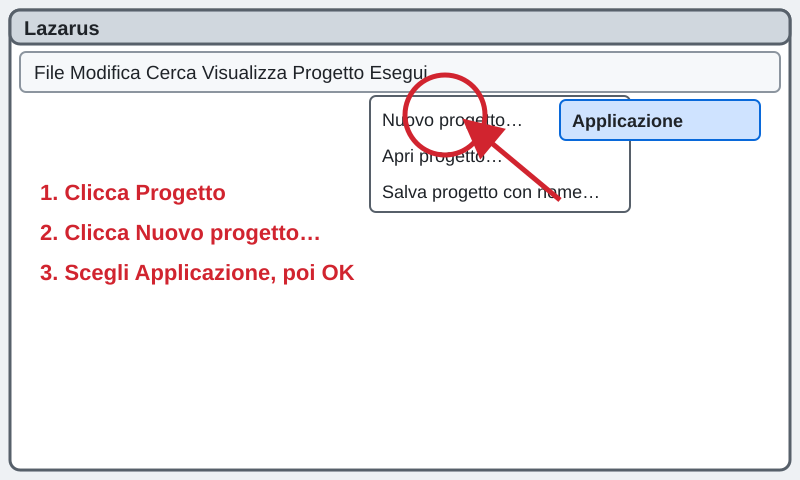
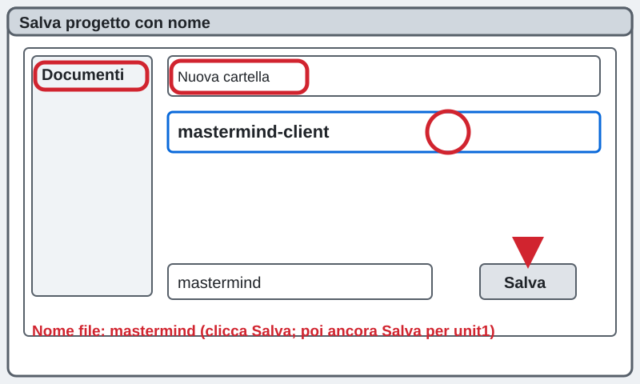
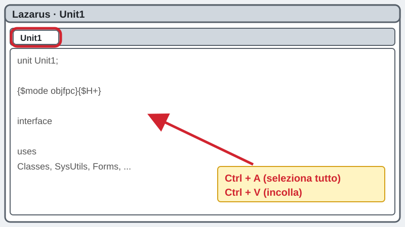
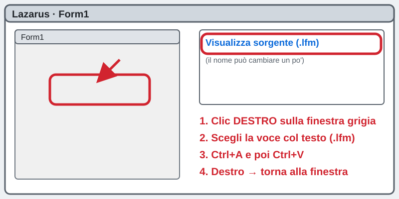
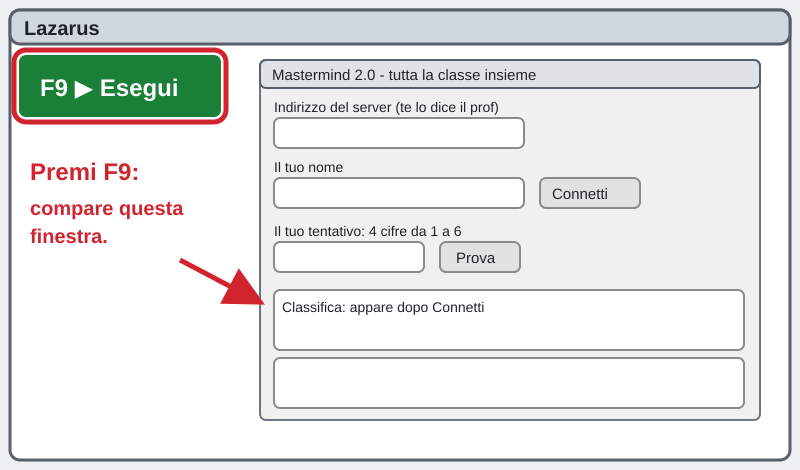
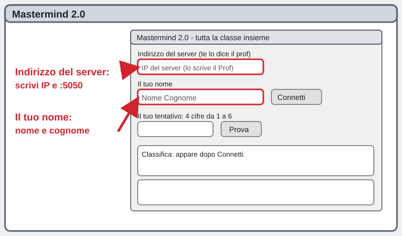
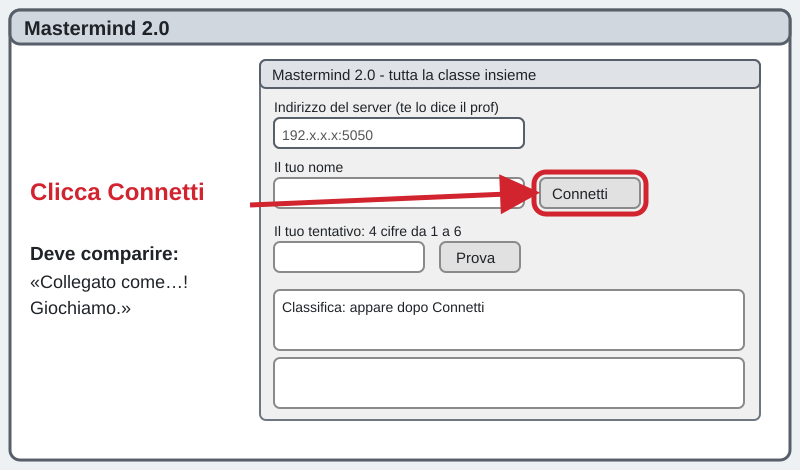
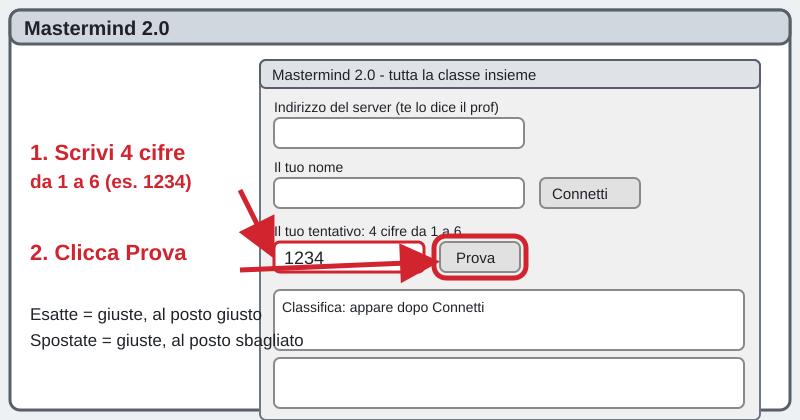
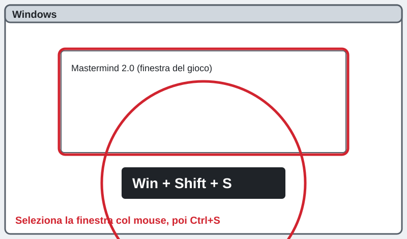
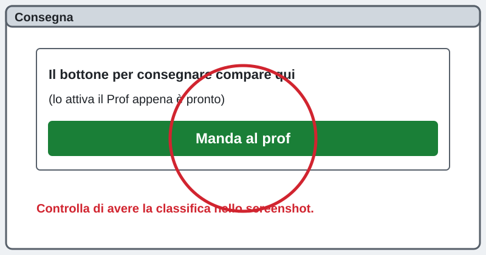

3INF · progetto mastermind-client · si gioca tutti insieme, in rete
Il client del Mastermind: giochiamo tutti insieme
Creazioni di applicazioni con Lazarus
La pagina viene aggiornata spesso durante la lezione: premi F5 per vedere la versione nuova.
সার্ভারের IP ঠিকানা: প্রফেসর বোর্ডে লিখবেন বা এখানে দেখাবেন।
Questo riquadro si aggiorna da solo ogni 30 secondi. Scrivi solo questi numeri: la porta c'è già.
Chi sei?
Scrivi nome e cognome: serve al cruscotto per vedere a che punto sei.
Che cosa fai
Costruisci il client del Mastermind: la finestra con cui giochi. Il server (il PC del Prof) pensa un solo codice segreto per tutta la classe e tiene la classifica. Tu provi a indovinarlo e vedi dove sei rispetto ai compagni.
তুমি Mastermind খেলার জানালা (client) বানাবে। প্রফেসরের PC (server) একটা গোপন কোড ঠিক করে, পুরো ক্লাস একসাথে খেলে।
Sei bloccato? Scrivi la tua domanda nella casella dell'assistente in fondo alla pagina: ti risponde subito. Alza la mano solo se il PC non funziona (non si accende, niente rete, Lazarus non si apre).
আটকে গেলে পেজের নিচে সহকারীর বক্সে প্রশ্ন লেখো। শুধু PC কাজ না করলে হাত তোলো।
1Crea il progetto
In Lazarus, menu Progetto → Nuovo progetto… → Applicazione → OK. Compare una finestra grigia: è la Form1. FATTO!
Lazarus: Progetto → Nuovo progetto… → Applicazione → OK।

2Salva il progetto in Documenti
Menu Progetto → Salva progetto con nome…. A sinistra clicca Documenti, poi Nuova cartella e scrivi il nome qui sotto. Entra nella cartella, in Nome file scrivi mastermind e clicca Salva; per unit1.pas clicca ancora Salva.
Documenti-এ নতুন ফোল্ডার mastermind-client বানাও, ভেতরে mastermind নামে Salva চাপো।
mastermind-client
3Incolla il codice in Unit1
Clicca la scheda Unit1 (se non la vedi premi F12). Premi Ctrl + A. Copia il riquadro nero qui sotto con il bottone Copia e premi Ctrl + V in Lazarus. Il vecchio codice sparisce: è giusto così. Questo è l'unico file del programma: non devi scaricare altro.
Unit1 ট্যাবে ক্লিক করো, Ctrl+A, নিচের কোড কপি করে Ctrl+V। আর কোনো ফাইল লাগবে না।
unit Unit1;
{ MASTERMIND 2.0 - CLIENT (per i ragazzi), TUTTO IN UN FILE.
Ti collegi al PC del prof, quando il prof dice "Via" provi le combinazioni.
Ogni richiesta: ti colleghi, mandi UNA riga, leggi UNA riga, chiudi. }
{$mode objfpc}{$H+}
interface
uses
Classes, SysUtils, Forms, Controls, Graphics, Dialogs, StdCtrls, ExtCtrls,
sockets, ssockets;
type
TForm1 = class(TForm)
LblIp: TLabel;
EdIp: TEdit;
LblNome: TLabel;
EdNome: TEdit;
BtnConnetti: TButton;
LblEsito: TLabel;
LblStato: TLabel;
LblTentativo: TLabel;
EdTentativo: TEdit;
BtnProva: TButton;
MemoStoria: TMemo;
LblMigliore: TLabel;
LblPeggiore: TLabel;
LblPosizione: TLabel;
LblFiniti: TLabel;
Timer1: TTimer;
procedure FormCreate(Sender: TObject);
procedure BtnConnettiClick(Sender: TObject);
procedure BtnProvaClick(Sender: TObject);
procedure Timer1Timer(Sender: TObject);
private
Collegato: Boolean;
Errori: Integer;
Nome: String;
function PulisciNome: String;
function Chiedi(const Riga: String; out Risposta: String): String;
function Campo(const S: String; N: Integer): String;
procedure Mostra(const R: String; Dopo: Integer);
public
Avviato: Boolean; // True quando FormCreate e' gia' partita
procedure AfterConstruction; override;
end;
var
Form1: TForm1;
implementation
{$R *.lfm}
const
PORTA_SERVER = 5050; // la porta del server: non toccarla
TEMPO_MS = 2000; // dopo 2 secondi senza risposta ci arrendiamo
procedure TForm1.FormCreate(Sender: TObject);
begin
Avviato := True;
Collegato := False;
Errori := 0;
Timer1.Enabled := False;
Timer1.Interval := 3000;
BtnProva.Enabled := False;
LblStato.Caption := 'Non collegato';
LblEsito.Caption := 'Scrivi il tuo nome e premi Connetti.';
end;
{ Se Lazarus non ha collegato i bottoni, li colleghiamo noi da qui }
procedure TForm1.AfterConstruction;
begin
inherited AfterConstruction;
if not Assigned(BtnConnetti.OnClick) then BtnConnetti.OnClick := @BtnConnettiClick;
if not Assigned(BtnProva.OnClick) then BtnProva.OnClick := @BtnProvaClick;
if not Assigned(Timer1.OnTimer) then Timer1.OnTimer := @Timer1Timer;
if not Avviato then FormCreate(nil);
end;
{ il quarto, il terzo... campo di una riga separata da punto e virgola }
function TForm1.Campo(const S: String; N: Integer): String;
var
L: TStringList;
begin
Result := '';
L := TStringList.Create;
try
L.StrictDelimiter := True;
L.Delimiter := ';';
L.DelimitedText := S;
if (N >= 0) and (N < L.Count) then Result := Trim(L[N]);
finally
L.Free;
end;
end;
function TForm1.PulisciNome: String;
begin
Result := Trim(StringReplace(EdNome.Text, ';', '', [rfReplaceAll]));
end;
{ Manda UNA riga al server e legge UNA riga. Risultato: '' se tutto bene,
altrimenti il motivo dell'errore in parole semplici. }
function TForm1.Chiedi(const Riga: String; out Risposta: String): String;
var
S: TInetSocket;
Ch: Char;
N: Integer;
Fine: QWord;
Buf, Host: String;
Porta, K: Integer;
begin
Result := '';
Risposta := '';
S := nil;
// se qualcuno scrive anche ":5050" dopo l'IP, va bene lo stesso
Host := Trim(EdIp.Text);
Porta := PORTA_SERVER;
K := Pos(':', Host);
if K > 0 then
begin
Porta := StrToIntDef(Trim(Copy(Host, K + 1, 10)), PORTA_SERVER);
Host := Trim(Copy(Host, 1, K - 1));
end;
try
try
S := TInetSocket.Create(Host, Porta, TEMPO_MS);
S.IOTimeout := TEMPO_MS;
Buf := Riga + #10;
S.WriteBuffer(Buf[1], Length(Buf));
Fine := GetTickCount64 + TEMPO_MS;
repeat
N := S.Read(Ch, 1);
if N <= 0 then Break;
if Ch = #10 then Break;
if Ch <> #13 then Risposta := Risposta + Ch;
until GetTickCount64 > Fine;
if Risposta = '' then Result := 'Il server non ha risposto. Riprova tra un attimo.';
except
on E: ESocketError do
case E.Code of
seConnectFailed:
Result := 'Connessione rifiutata: il server non e'' acceso oppure la porta e'' sbagliata.';
seConnectTimeOut, seIOTimeOut:
Result := 'Il server non risponde: controlla l''IP (deve essere quello scritto in alto nella pagina) e il firewall.';
seHostNotFound:
Result := 'L''IP non e'' scritto bene: deve avere 4 numeri separati da punti.';
else
Result := 'Non riesco a collegarmi: controlla l''IP e che il server sia acceso.';
end;
on E: Exception do
Result := 'Non riesco a collegarmi: controlla l''IP e che il server sia acceso.';
end;
finally
S.Free;
end;
end;
{ Aggiorna le scritte grandi. Dopo = posizione del campo "tentativi" nella risposta }
procedure TForm1.Mostra(const R: String; Dopo: Integer);
var
Mig, Peg, Pos_, Tot: String;
begin
Pos_ := Campo(R, Dopo + 1);
Tot := Campo(R, Dopo + 2);
Mig := Campo(R, Dopo + 3);
Peg := Campo(R, Dopo + 4);
if Mig = '0' then LblMigliore.Caption := 'Migliore: nessuno ha ancora finito'
else LblMigliore.Caption := 'Migliore: ' + Mig + ' tentativi';
if Peg = '0' then LblPeggiore.Caption := 'Peggiore: -'
else LblPeggiore.Caption := 'Peggiore: ' + Peg + ' tentativi';
if (Pos_ = '0') or (Pos_ = '') then LblPosizione.Caption := 'Il tuo posto: non hai ancora indovinato'
else LblPosizione.Caption := 'Il tuo posto: ' + Pos_ + 'o';
LblFiniti.Caption := 'Hanno finito: ' + Tot;
end;
procedure TForm1.BtnConnettiClick(Sender: TObject);
var
R, Err: String;
begin
Nome := PulisciNome;
if Nome = '' then
begin
LblEsito.Caption := 'Scrivi prima il tuo nome nella casella.';
Exit;
end;
if Trim(EdIp.Text) = '' then
begin
LblEsito.Caption := 'Scrivi l''IP del server (e'' scritto in alto nella pagina).';
Exit;
end;
LblEsito.Caption := 'Mi collego...';
Err := Chiedi('STATO;' + Nome, R);
if (Err = '') and (Campo(R, 0) <> 'STATO') then
Err := 'Risposta strana dal server: ' + R;
if Err <> '' then
begin
Collegato := False;
Timer1.Enabled := False;
BtnProva.Enabled := False;
LblStato.Caption := 'Non collegato';
LblEsito.Caption := Err;
Exit;
end;
Collegato := True;
Errori := 0;
BtnProva.Enabled := True;
LblEsito.Caption := 'Collegato! Ciao ' + Nome + '.';
Mostra(R, 2);
if Campo(R, 1) = 'GIOCO' then LblStato.Caption := 'GIOCO: provaci!'
else LblStato.Caption := 'ATTESA: aspetta il Via del Prof';
Timer1.Enabled := True;
end;
procedure TForm1.BtnProvaClick(Sender: TObject);
var
R, Err, Cod, T: String;
I: Integer;
Ok: Boolean;
begin
if not Collegato then
begin
LblEsito.Caption := 'Prima premi Connetti.';
Exit;
end;
Cod := Trim(EdTentativo.Text);
Ok := Length(Cod) = 4;
for I := 1 to Length(Cod) do
if not (Cod[I] in ['1'..'6']) then Ok := False;
if not Ok then
begin
LblEsito.Caption := 'Servono 4 cifre, ognuna da 1 a 6 (esempio: 1234).';
Exit;
end;
Err := Chiedi('GUESS;' + Nome + ';' + Cod, R);
if Err <> '' then
begin
LblEsito.Caption := Err;
Exit;
end;
T := Campo(R, 0);
if T = 'WAIT' then
begin
LblEsito.Caption := 'Il Prof non ha ancora detto Via: aspetta.';
LblStato.Caption := 'ATTESA: aspetta il Via del Prof';
end
else if T = 'RESULT' then
begin
LblStato.Caption := 'GIOCO: provaci!';
LblEsito.Caption := Cod + ': ' + Campo(R, 1) + ' esatte, ' + Campo(R, 2) + ' spostate';
MemoStoria.Lines.Add('n. ' + Campo(R, 3) + ' ' + Cod + ' esatte ' + Campo(R, 1) +
' spostate ' + Campo(R, 2));
Mostra(R, 3);
EdTentativo.Text := '';
end
else if T = 'WIN' then
begin
LblStato.Caption := 'HAI VINTO!';
LblEsito.Caption := 'BRAVO! Hai indovinato in ' + Campo(R, 2) + ' tentativi e ' +
Campo(R, 3) + ' secondi.';
MemoStoria.Lines.Add('n. ' + Campo(R, 2) + ' ' + Cod + ' INDOVINATO! Posto ' + Campo(R, 4));
Mostra(R, 3);
BtnProva.Enabled := False;
end
else if T = 'ERR' then
LblEsito.Caption := 'Il server dice: ' + Campo(R, 1)
else
LblEsito.Caption := 'Risposta strana dal server: ' + R;
end;
{ ogni 3 secondi chiede al server come siamo messi }
procedure TForm1.Timer1Timer(Sender: TObject);
var
R, Err: String;
begin
if not Collegato then Exit;
Err := Chiedi('STATO;' + Nome, R);
if Err <> '' then
begin
Inc(Errori);
LblEsito.Caption := Err;
if Errori >= 3 then
begin
Collegato := False;
Timer1.Enabled := False;
BtnProva.Enabled := False;
LblStato.Caption := 'Non collegato';
LblEsito.Caption := 'Il server non risponde piu'': premi Connetti per riprovare.';
end;
Exit;
end;
Errori := 0;
if Campo(R, 0) <> 'STATO' then Exit;
Mostra(R, 2);
if (LblStato.Caption = 'HAI VINTO!') and (Campo(R, 3) = '0') then
begin
// il Prof ha ricominciato con un'altra combinazione
MemoStoria.Lines.Clear;
BtnProva.Enabled := True;
LblStato.Caption := '';
end;
if LblStato.Caption <> 'HAI VINTO!' then
if Campo(R, 1) = 'GIOCO' then LblStato.Caption := 'GIOCO: provaci!'
else LblStato.Caption := 'ATTESA: aspetta il Via del Prof';
end;
end.

4Incolla la finestra del gioco
Fai clic destro sulla finestra grigia (Form1) e scegli Visualizza form come testo (il nome può cambiare un po' tra le versioni di Lazarus). Premi Ctrl + A. Copia il riquadro nero qui sotto con il bottone Copia e premi Ctrl + V. Poi fai ancora clic destro e scegli di tornare alla finestra: compare il Mastermind!
ফর্মে ডান ক্লিক → Visualizza form come testo, Ctrl+A, নিচের কোড কপি করে Ctrl+V।
object Form1: TForm1
Left = 200
Height = 560
Top = 80
Width = 640
Caption = 'Mastermind 2.0 - il tuo CLIENT'
ClientHeight = 560
ClientWidth = 640
OnCreate = FormCreate
LCLVersion = '4.2.0.0'
object LblIp: TLabel
Left = 16
Height = 17
Top = 12
Width = 200
Caption = 'IP del server (scritto nella pagina)'
ParentColor = False
end
object EdIp: TEdit
Left = 16
Height = 34
Top = 32
Width = 200
Font.Height = -19
ParentFont = False
TabOrder = 0
Text = '192.168.38.70'
end
object LblNome: TLabel
Left = 236
Height = 17
Top = 12
Width = 200
Caption = 'Il tuo nome'
ParentColor = False
end
object EdNome: TEdit
Left = 236
Height = 34
Top = 32
Width = 220
Font.Height = -19
ParentFont = False
TabOrder = 1
end
object BtnConnetti: TButton
Left = 476
Height = 34
Top = 32
Width = 148
Caption = 'Connetti'
OnClick = BtnConnettiClick
TabOrder = 2
end
object LblEsito: TLabel
Left = 16
Height = 40
Top = 76
Width = 608
AutoSize = False
Caption = 'Scrivi il tuo nome e premi Connetti.'
Font.Height = -16
ParentColor = False
ParentFont = False
WordWrap = True
end
object LblStato: TLabel
Left = 16
Height = 40
Top = 124
Width = 608
AutoSize = False
Caption = 'Non collegato'
Font.Height = -29
Font.Style = [fsBold]
ParentColor = False
ParentFont = False
end
object LblTentativo: TLabel
Left = 16
Height = 17
Top = 176
Width = 300
Caption = 'Il tuo tentativo (4 cifre, ognuna da 1 a 6)'
ParentColor = False
end
object EdTentativo: TEdit
Left = 16
Height = 40
Top = 196
Width = 200
Font.Height = -24
MaxLength = 4
ParentFont = False
TabOrder = 3
end
object BtnProva: TButton
Left = 236
Height = 40
Top = 196
Width = 148
Caption = 'Prova'
Enabled = False
OnClick = BtnProvaClick
TabOrder = 4
end
object MemoStoria: TMemo
Left = 16
Height = 220
Top = 252
Width = 330
Font.Height = -16
ParentFont = False
ReadOnly = True
ScrollBars = ssAutoVertical
TabOrder = 5
end
object LblMigliore: TLabel
Left = 364
Height = 30
Top = 252
Width = 260
AutoSize = False
Caption = 'Migliore: -'
Font.Height = -19
ParentColor = False
ParentFont = False
WordWrap = True
end
object LblPeggiore: TLabel
Left = 364
Height = 30
Top = 300
Width = 260
AutoSize = False
Caption = 'Peggiore: -'
Font.Height = -19
ParentColor = False
ParentFont = False
end
object LblPosizione: TLabel
Left = 364
Height = 50
Top = 348
Width = 260
AutoSize = False
Caption = 'Il tuo posto: -'
Font.Height = -19
ParentColor = False
ParentFont = False
WordWrap = True
end
object LblFiniti: TLabel
Left = 364
Height = 30
Top = 416
Width = 260
AutoSize = False
Caption = 'Hanno finito: -'
Font.Height = -19
ParentColor = False
ParentFont = False
end
object Timer1: TTimer
Enabled = False
Interval = 3000
OnTimer = Timer1Timer
left = 560
top = 500
end
end

5Fai partire il programma
Premi F9. Dopo qualche secondo compare la finestra Mastermind 2.0. Se Lazarus ti chiede di salvare, clicca Salva.
F9 চাপো। Mastermind 2.0 উইন্ডো আসবে।

6Scrivi il tuo nome e controlla l'IP
Nel programma la prima casella ha già l'IP del server. Confrontalo con il riquadro grande in alto in questa pagina: se è diverso, clic dentro la casella, Ctrl + A e scrivi quello della pagina. Nella casella Il tuo nome scrivi nome e cognome.
প্রথম বাক্সে সার্ভারের IP আছে; পেজের উপরের IP-র সাথে মেলাও। নিজের নাম লেখো।
L'IP della pagina (se vuoi copiarlo, Ctrl + V nella prima casella):
L'IP del server non c'è ancora: lo scrive il Prof. Guarda il riquadro grande in alto: appare da solo.

7Premi Connetti
Clicca il bottone Connetti. Se tutto va bene, in alto compare Collegato! e sotto ATTESA: aspetta il Via del Prof.
«Connetti» বাটন চাপো। «Collegato!» লেখা আসবে।

8Quando il Prof dice «Via», gioca
Quando il Prof dice Via, la scritta grande diventa GIOCO. Scrivi 4 cifre da 1 a 6 (per esempio 1234) e clicca Prova. Esatte = cifre giuste al posto giusto. Spostate = cifre giuste ma al posto sbagliato. Riprova finché indovini: il codice è lo stesso per tutta la classe. A destra vedi il migliore, il peggiore e il tuo posto: si aggiornano da soli ogni 3 secondi.
Via-র পর ১ থেকে ৬ এর ৪টা সংখ্যা লেখো, Prova চাপো। Esatte = ঠিক জায়গায় ঠিক সংখ্যা। Spostate = সংখ্যা ঠিক, জায়গা ভুল।

9Fai lo screenshot
Premi Win + Shift + S, seleziona la finestra del gioco, poi Ctrl + S: salva in Documenti → mastermind-client con il nome qui sotto.
Win+Shift+S দিয়ে গেমের উইন্ডোর ছবি নাও। নিচের নামে Salva।
client_screenshot.png
10Consegna
Manda al Prof lo screenshot e unit1.pas (nella cartella mastermind-client).
প্রফেসরকে ছবি আর unit1.pas পাঠাও।
Il bottone per consegnare lo attiva il Prof appena è pronto: comparirà qui.

Se non va
কাজ না করলে নিচে দেখো। দরকার হলে সহকারীকে লেখো।
Il server del Prof non è ancora acceso, oppure hai cambiato qualcosa nell'IP. Aspetta un minuto e premi di nuovo Connetti: non succede niente di grave.
L'IP è sbagliato (una cifra o un punto) oppure il firewall del PC del Prof blocca. Confrontalo con il riquadro grande in alto, cifra per cifra. Se è uguale, scrivi all'assistente.
Nella prima casella ci sono 4 numeri separati da punti, senza spazi né lettere. Scrivilo come nel riquadro grande in alto.
La casella Il tuo nome è vuota. Scrivi nome e cognome, poi premi Connetti.
Va tutto bene. Aspetta che il Prof dica Via.
Prima premi Connetti. Il bottone Prova si accende solo quando sei collegato.
Quasi sempre il codice non è stato incollato tutto. Rifai il passo 3: clicca dentro Unit1, Ctrl + A, poi incolla di nuovo. Poi rifai il passo 4.
Per qualsiasi altro problema: scrivi nella casella dell'assistente in fondo alla pagina.
Piano B: se la rete non funziona proprio
Il Prof ti dice come giocare con i file condivisi al posto della rete. Resta su questa pagina: lo scrive qui.
নেটওয়ার্ক একদম না চললে প্রফেসর ফাইলের মাধ্যমে খেলার উপায় বলবেন।
La pagina viene aggiornata spesso durante la lezione: premi F5 per vedere la versione nuova.